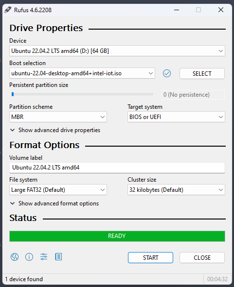
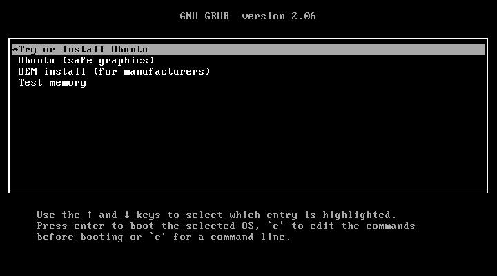
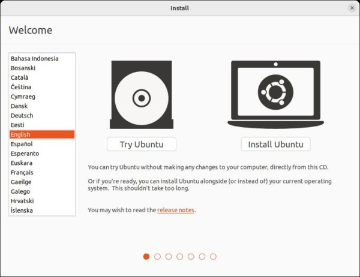
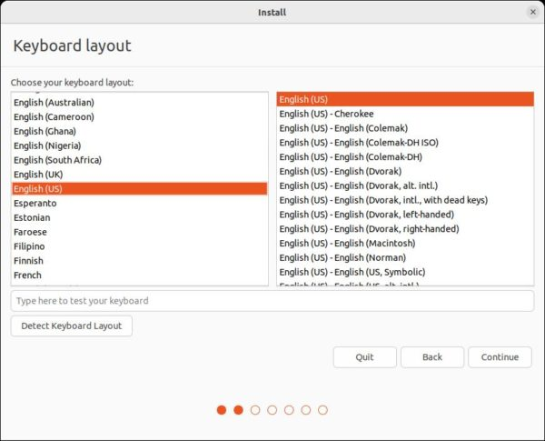
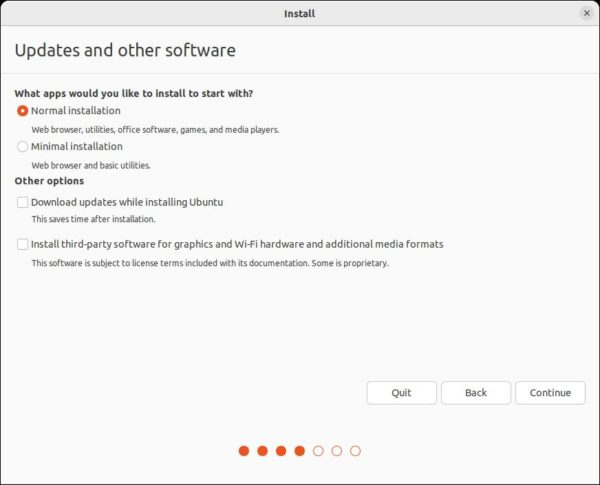
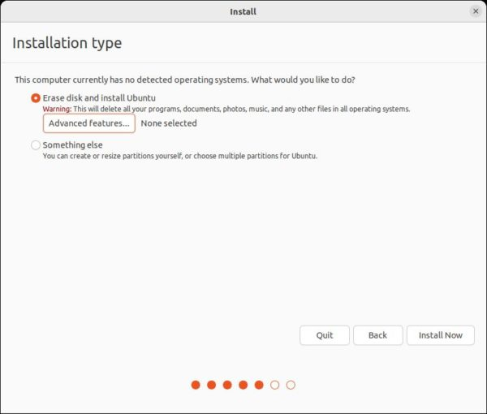
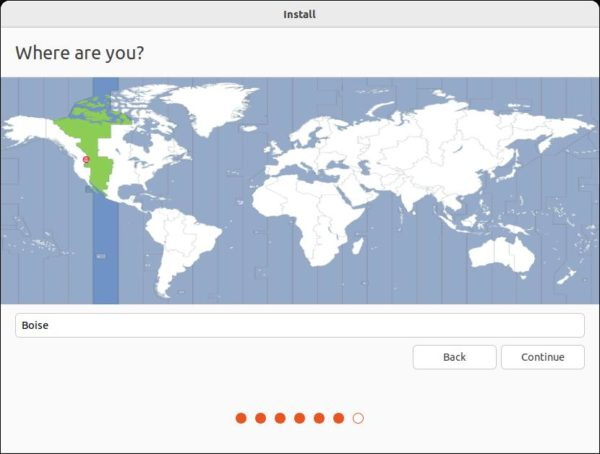
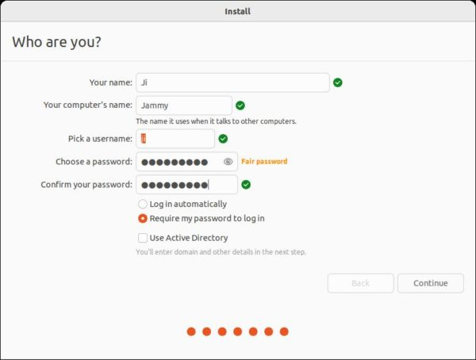
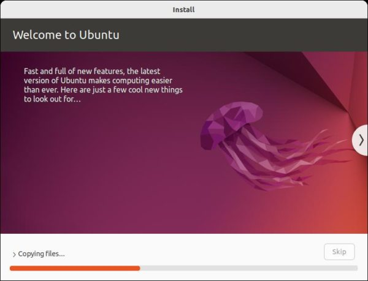
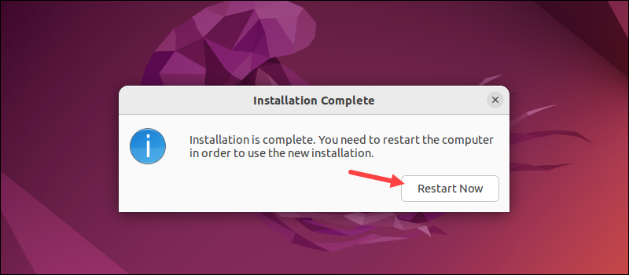

Ubuntu Flash Guide for LEC-ALN/ASLCreating a bootable USB drive Download ISO: Firstly ,download Ubuntu Desktop ISO image from https://ubuntu.com/download/iot/intel-iot , and follow these below steps to burn it. 2.Download Rufus: Go to Index of /downloads and download the latest and suitable version of Rufus. 3.Insert USB Drive: Plug in your USB drive. 4.Open Rufus: Use the Start menu to search for Rufus, then launch the program as administrator. 5.Select USB Drive and ISO Image: Choose your USB drive and the ISO image you want to create a bootable drive from. 6.Click SELECT and choose “ubuntu-22.04-desktop-amd64+intel-iot” ISO image from Downloads 7.Start the Process**: Click “START” and “Write in ISO Image mode” to create the bootable USB drive. 8.Select “OK“ and “Yes“ on the warnings that appears, as shown in the attachment below. 9.Wait for Rufus to finish creating the bootable USB drive, choose “CLOSE” once the status is READY and remove the bootable USB drive  Installing Ubuntu 22.04 on LEC-ALN Boot your PC with the USB: Next, connect the USB stick to the LEC-ALN. Pressing ESC during boot should bring up the BIOS/UEFI screen. Navigate to “Save & Exit “ menu and choose UEFI : USB Partition 1 (USB), then Choose “Try or Install Ubuntu“ under GNU GRUB  Start install wizard and click “Install Ubuntu” to get to next page.  If the layout is not accurate by default, use “Detect Keyboard Layout” or choose it manually.  Under “Updates and other Software” page, Choose “Normal Installation“  In the next page, you will be asked where to install the Ubuntu system. Choose the desired Option  After click “Install Now” and confirm on pop-up dialog. The wizard will prompt to set up your account, computer name, and desired location.    When the installation finishes, a prompt appears to restart the machine, Click “Restart Now”  Then your system will start to reboot ,remove the USB drive and then press “Enter” Ubuntu 22.04 LTS Desktop installation is successful.